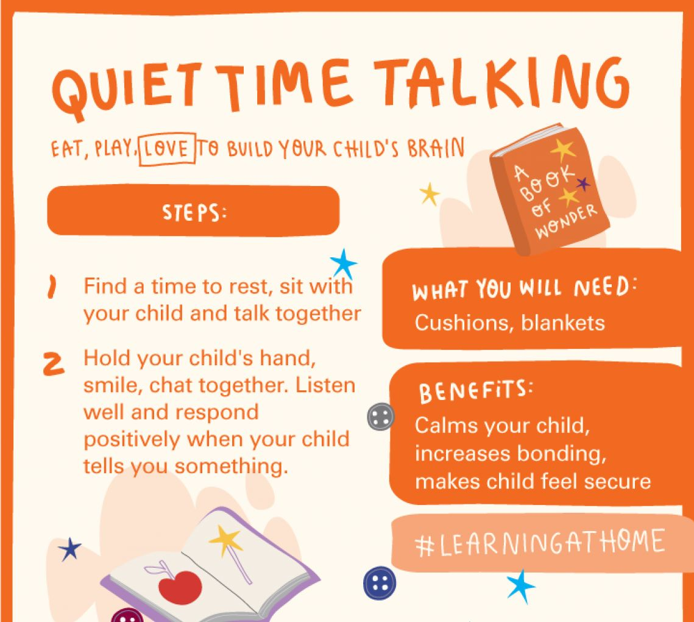

How to communicate effectively with your young child :
Every interaction you have with your child is a form of communication. It's not just about the words you say: The tone of your voice, the
look in your eyes and the hugs and kisses you give all convey messages to your child. The way you communicate with your child not only
teaches them how to communicate with others, it shapes their emotional development and how they build relationships later in life.
What are the types of communication?
Communication can take two forms: verbal and nonverbal.
Verbal communication is the way we communicate with words and includes:
- Pitch and tone of voice
- The words you say
- Dialect, or using words your child can best understand.
Nonverbal communication is both :
intentional and unintentional communication through body language. It includes things like:
- Facial expressions
- Eye contact
- Personal space
- Hand gestures
- Physical touch like a hug
Try these nine tips to practice your verbal and nonverbal communication skills:
1.Active listening
Listening actively helps children to feel heard and understood. By using gestures such as encouraging
smiles and affirming nods you can show that you are engaged with what your child is saying and really care.
Getting down to the same eye level as your child as they speak to you can help them feel safer and more connected to you.
Show that you are listening intently to what they have to say by asking them questions like
“what?” “why?” and “how?”. This also helps your child to improve their own communication skills by teaching them how to tell a story and what details to include.
2.Reflective listening
A great way to show your child that you are paying attention and care about what they have to say is by acting like a mirror.
Repeat back what they say to you using different words. For example, if your child says, “I’m not playing with Marco anymore,”
you could respond with, “You are not playing with your friend?”.
This leaves room for your child to express their emotions without judgment. You might be surprised at how much they have to say!
3.Speaking clearly
Use language that is understandable for your child and appropriate to their age.
Be clear, specific and do not use derogatory words. Using kind language helps set a positive example for your children.
Remember, the conversation should make your little one feel respected and loved.
4.Avoiding bribes
Offering rewards such as candy for basic behaviors may feel like they give you short-term control,
but they do not allow you to develop clear boundaries and can lead to distrust between you and your child.
Try to set clear and realistic expectations about what you would like your child to do, praise good behavior when you see it,
and use calm consequences to encourage better behavior when needed.
5.Explaining feelings
To help your child develop emotional intelligence, it is important for them to learn how to name their feelings.
When your child is expressing their feelings verbally, listen to what they have to say with empathy and without judgment.
Consider what life looks like through their eyes.
If your little one is expressing their feelings in a nonverbal way – for example through a temper tantrum or laughing and having fun doing an activity they enjoy –
help them put words to how they feel, such as happy, sad, relaxed, hurt, scared, hungry, proud, sleepy, angry, helpless, irritated, embarrassed or joyful.
6.Using ‘noticing’ statements
When you praise your child for specific actions, it helps them to feel good about themselves and lets them know what behaviors you like.
Instead of saying “good job!” try being more specific with a ‘noticing statement’: “I noticed that you put all of your toys away after playtime. Nice work!”
7. Having fun together
As your children grow, parenting can seem like a more serious task.
That’s why it is all the more important to have fun together and enjoy lighthearted conversation – it’s a great way to strengthen your relationship!
Find ways to relate to your child by saying something positive about something they care about,
paying attention to their interests and joking together. Remember, laugh with your child but never at your child.
8.Focusing on behavior
If you are upset with your child about something,
make sure that your criticism and comments are directed at their behavior and not at them as a person.
For example, instead of “I don’t like that you are messy” try “I don’t like it when you leave your clothes all over the floor.”
9.Leading by example
Consider what example you are setting. Parents are children’s introduction to the world. What your child sees you do is as important as what they hear you say.
Only make a promise to your child that you are sure you can keep. This helps to build and maintain trust between you and your children.
Remember, leading with kindness and love is always the way to go when bonding and communicating with your child!
.jpg)
;
What you need to know about parent-child attachment:
Children thrive when they feel safe, loved and nurtured.
For many parents, forming a close bond with their child comes easily.
For many others who did not feel cherished, protected or valued during their own childhood, it can be much more of a struggle.
The good news is that parenting skills can be learned.
Read on to learn why bonding with your little one is crucial to their development and well-being, and some simple ways that you can do it every day.
Why building a relationship with your child matters
Providing your child with love and affection is a pre-requisite for the healthy development of their brain, their self-confidence, capacity to thrive
and even their ability to form relationships as they go through life.
You literally cannot give babies ‘too much’ love. There is no such thing as spoiling them by holding them too much or giving them too much attention.
Responding to their cues for feeding and comfort makes babies feel secure. When babies are routinely left alone,
they think they have been abandoned and so they become more clingy and insecure when their parents return.
When you notice your child’s needs and respond to them in a loving way, this helps your little one to
feel at ease. Feeling safe, seen, soothed and secure increases neuroplasticity, the ability of the brain to change and adapt. When a child’s world at home is full of love,
they are better prepared to deal with the challenges of the larger world. A positive early bond lays
the ground for children to grow up to become happy, independent adults. Loving, secure relationships help build resilience, our ability to cope with challenges and recover from setbacks.
How to bond with your child
Parenting can be difficult at times and there is no such thing as a perfect parent.
But if you can provide a loving and nurturing environment for your child to grow up in and you’re a steady and reliable presence in their life,
then you’ll be helping them to have a great start in life. Here are some ways that can help you build a strong connection with your child from the moment you meet.
-
Notice what they do. When your baby or young child cries, gestures or babbles, respond appropriately with a hug, eye contact or words.
This not only teaches your child that you’re paying attention to them,
but it helps to build neural connections in your little one’s brain that support the development of communication and social skills.
-
Play together. By playing with your child, you are showing them that they are valued and fun to be around.
Give them your full attention when you play games together and enjoy seeing the world from your child’s perspective.
When you’re enjoying fun moments and laughing together, your body releases endorphins (“feel-good hormones”)
that promote a feeling of well-being for both you and your child.
-
Hold them close.
Cuddling and having skin-to-skin contact with your baby helps to bring you closer in many ways.
Your child will feel comforted by your heartbeat and will even get to know your smell.
As your child gets a bit older, hugging them can help them learn to regulate their emotions and manage stress.
This is because when a child receives a hug, their brain releases oxytocin – the “feel good” chemical – and calms the release of cortisol, the “stress” chemical.
-
Have conversations.
Taking interest in what your young child has to say shows them that you care about their thoughts and feelings.
This can even start from day one. By talking and softly singing to your newborn, it lets them know that you are close by and paying attention to them.
When they make cooing noises, respond with words to help them learn the back and forth of a conversation.
-
Respond to their needs.
Changing a diaper or nappy, feeding your child and helping them fall asleep reassures them that their needs will be met and that they are safe and cared for.
Taking care of your child and meeting their needs is also a great reminder of your ability to support your child.
Above all, enjoy being with your child, make the most of the time together and know that your
love and presence go a long way to helping your child thrive.
Experiencing difficulties bonding with your child?
If you are a new parent and you are having difficulty bonding with your baby, contact your health care provider as this could be a sign of postpartum depression.
This is a very common issue that affects many new parents.
You are not alone and with help it will get better.
activities to develop a connection with your child
Eat, play, love: Loving ways to help build your child’s brain.
The early years lay the foundation for how happy and healthy children will be later in life.
Providing a safe, loving environment for your child helps them to grow emotionally and mentally.
Try to find opportunities to spend quality time with your child and have fun together! Here are
five ways you can bond with your child and help their mind grow in the process.
